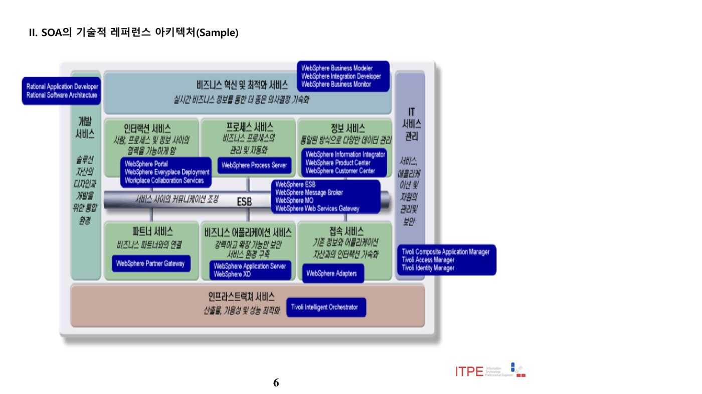
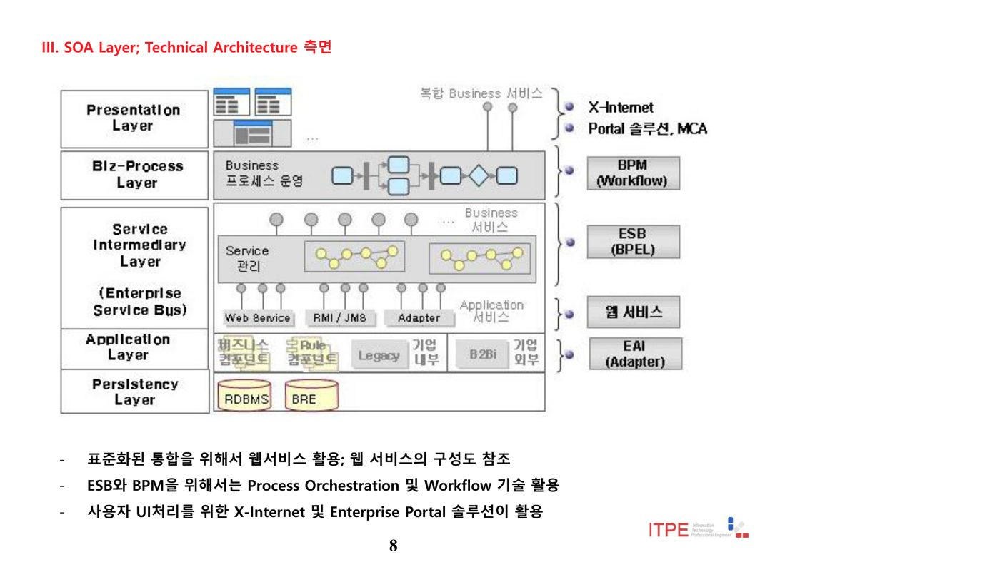
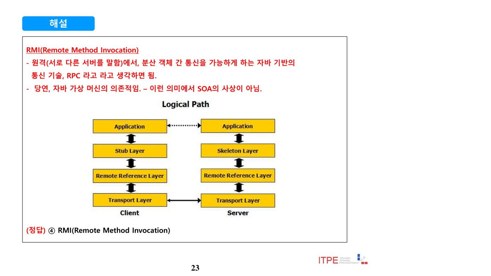
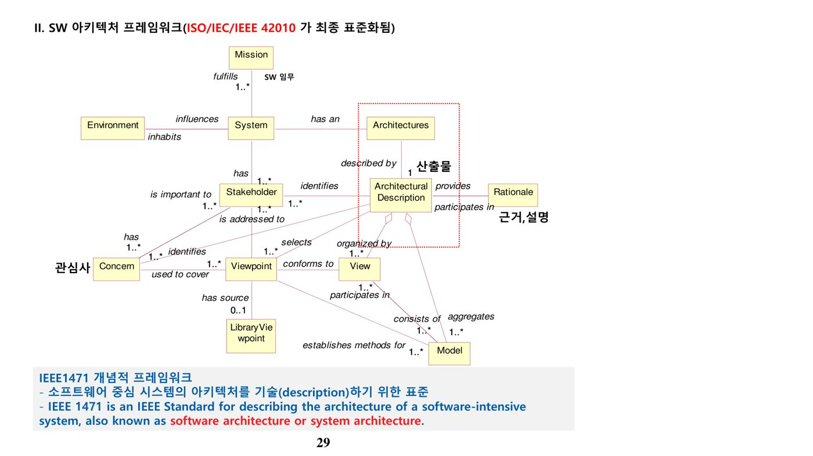
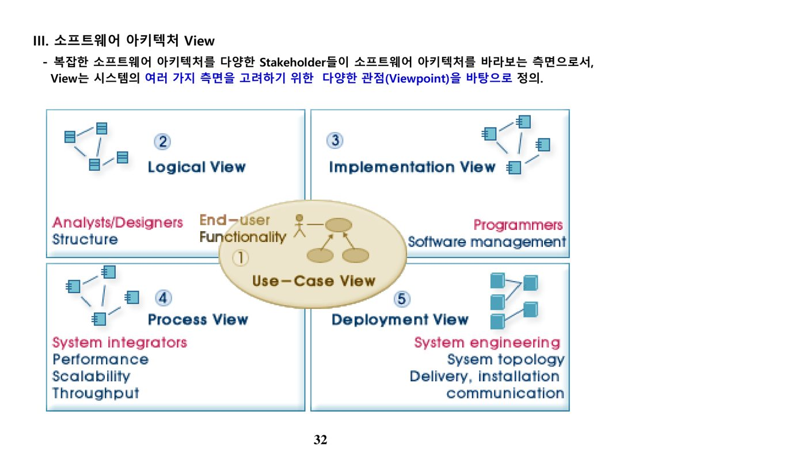
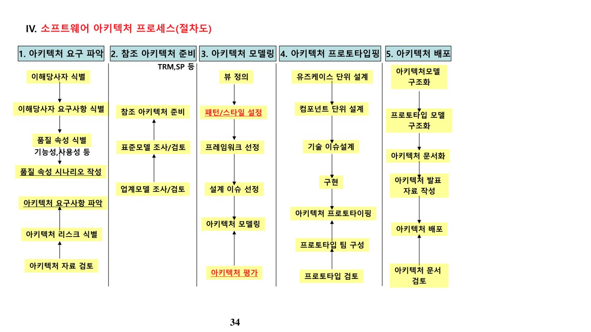
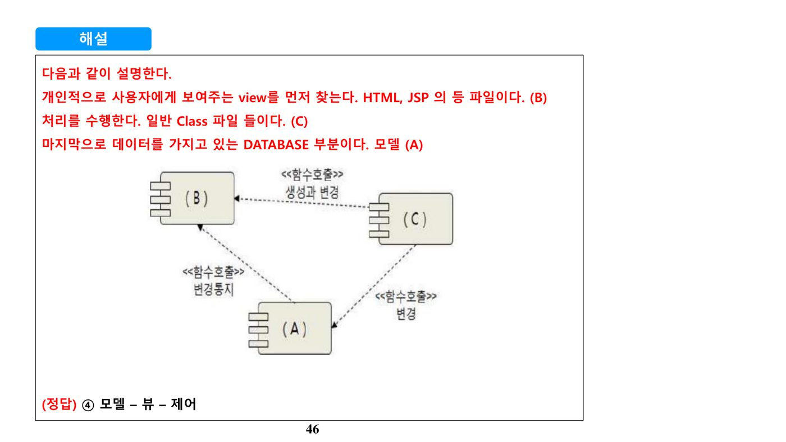
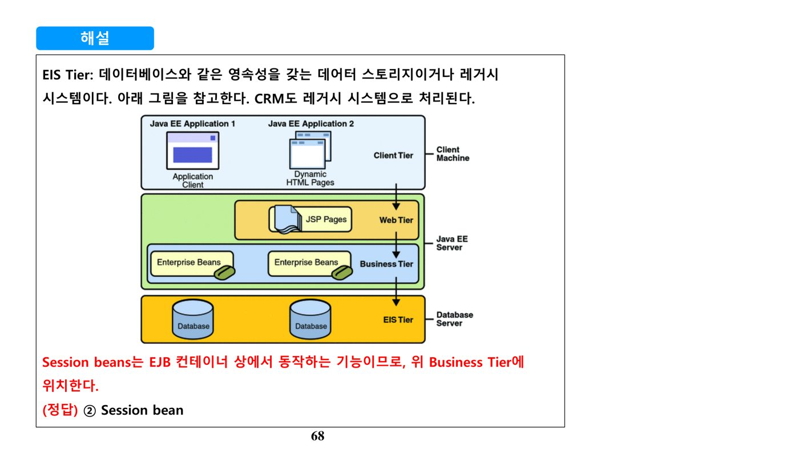

1. SOA (Service Oriented Architecture)
가. SOA의 개념과 특징
SOA는 비즈니스 기능을 표준 인터페이스를 가진 서비스 단위로 구성하고, 이를 조합해 애플리케이션을 만드는 아키텍처 스타일이다. 프로세스 중심의 통합, 플랫폼 독립성, 느슨한 결합(Loosely Coupled), 협업과 재사용을 핵심 특징으로 한다.
| 특징 | 내용 |
|---|---|
| 프로세스 중심 | 비즈니스 프로세스를 독립된 구성요소로 분리 설계. 비즈니스 로직은 비즈니스 서비스에 두고, 프로세스 서비스가 각 비즈니스 서비스를 통합(메시지 처리·서비스 컨트롤 담당)하는 워크플로우 형태 |
| 플랫폼 독립적 통합 | 구현 기술에 관계없이 연결을 보장하며, 성능·보안수준·신뢰성을 함께 보장 |
| Loosely Coupled 메시지·프로세스 상태관리 | 서비스 간 종속성을 줄여 프로세스를 단순화. 중복·비동기 메시지 상태를 관리하고, 서비스가 전체 프로세스 중 어느 상태인지 추적 |
| 협업과 재사용 | 모듈을 서로 공유하며 새로운 서비스를 제공하는 협업 구조 |

나. SOA 참조 아키텍처의 구성 영역
SOA 참조 아키텍처는 사용자 접점부터 인프라까지 여러 영역으로 구성되며, 그 중심에는 서비스 간 연계·중재·변환을 담당하는 ESB(Enterprise Service Bus)가 자리한다.
| 영역 | 설명 |
|---|---|
| Interaction 서비스 | 실제 사용자가 화면을 통해 사용하는 서비스. 엔터프라이즈 포탈로 구현 |
| 프로세스 서비스 | 기업 내부의 모든 비즈니스 프로세스를 관리·조정. BPM 툴로 구현 |
| 정보 서비스 | 서로 다른 내부 데이터 소스 관리를 담당. 정보 통합 툴로 구현 |
| 파트너 서비스 | 다양한 비즈니스 파트너와의 접속 서비스. 기업간 거래 표준을 지원하는 연계 툴로 제공 |
| 비즈니스 애플리케이션 서비스 | 실제 비즈니스 로직을 구현. 데이터·트랜잭션 처리를 담당 |
| 접속 서비스 | 기존 시스템을 SOA 체계에 포함. 다양한 어댑터 기술로 구현 |
| ESB (Enterprise Service Bus) | SOA의 Back-bone. 모든 서비스가 서로 연계되며 메시지 전송·중재·변환을 담당하는 중추. 서비스는 위치·메시지 성격에 구애받지 않고 작동 |
| 개발 서비스 | 표준화된 개발 서비스(모델링·코드생성·테스팅)를 통해 SOA 애플리케이션을 생성 |
| IT 서비스 관리 | 서비스로 구현된 모든 컴포넌트를 적절히 관리·개선 |
| Infrastructure 서비스 | 모든 서비스가 안정적으로, 요구되는 서비스 수준에 맞게 제공되도록 하는 기반 구조 |

다. SOA와 Web 2.0 비교
SOA와 Web 2.0은 모두 웹 서비스를 기반으로 하지만, 지향하는 표준·유연성·비즈니스 모델에 차이가 있다.
| 구분 | Web 2.0 | SOA |
|---|---|---|
| 서비스 모델 | 웹 서비스 | 웹 서비스 |
| 선호 서비스 표준 | HTTP, XML, RSS, REST | WSDL, UDDI, SOAP, BPEL, WS |
| 재사용성 | 매우 높음 | 약간 높음 |
| 유연성 및 순응성 | 매우 높음, 단순한 데이터 포맷, 가벼운 프로그래밍 모델 | 높음(보다 공식적), 조합과 통합(Composition and Orchestration), 서비스 지향의 원칙 |
| 비즈니스 모델 | 롱테일 효과, 네트워크 효과, 집단지능 활용, 고객 셀프서비스 | BPM, 자산 통합(Asset Integration), 데이터 퓨전, 레거시 자산의 생명주기 연장, 비즈니스 활동 모니터링, 비즈니스 지능(BI) 활용 |
| 설계 플랫폼 | AJAX, 신디케이션(Syndication), 멀티 디바이스 소프트웨어 | Service layer, Service Bus, Unit of Work |
| 핵심 역량 | 서비스로서의 SW(SaaS), 데이터 소스 통제, 사용자 신뢰, 집단지능 이용, 롱테일 효과, 단일 디바이스를 넘어선 SW, 가벼운 UI·개발모델 | 기능 재정비, 자산으로서 데이터, 접근가능성, 시스템·데이터 통합, 비용절감, 비즈니스 기민성(Agility), B2B 셀프서비스, 오픈 스탠다드, 온톨로지, 오퍼레이션의 투명성, 소비자 중심 비즈니스 프로세스 |
라. SOA와 CBD 비교
CBD(Component Based Development)는 기업 내부 특정 시스템 관점에서 컴포넌트 자체에 집중하는 반면, SOA는 기업 내·외부 통합 관점에서 프로세스와 서비스 연결에 무게를 둔다.
| 특성 | SOA | CBD |
|---|---|---|
| 시스템의 관점 | 기업 내·외부 통합 관점 | 기업 내부 특정 시스템 관점 |
| 프로세스 | 컴포넌트를 연결하는 프로세스에 대한 고려 비중이 큼 | 프로세스보다 개별 컴포넌트에 집중 |
| 컴포넌트 특성 | 서비스 컴포넌트 중심(추상화 정도가 높음) | 기능 컴포넌트 중심(상대적으로 추상화 정도가 낮음) |
| 모델링 기법 | 컨설팅 기법(IDEF 등), UML, EA | UML |
| 목표 | 비즈니스 목표와 연결(BPM과 연계한 성과 측정) | 시스템 관점의 컴포넌트 구축 |
| Platform | 이기종 통합 연계 | J2EE, .NET 개별적 연계 |
| 연계 방식 | Loosely Coupling (SOAP) | Tightly Coupling (Serialization) |
| 인터페이스 | 공개적인 인터페이스(WSDL 활용) | 개별 인터페이스 활용 |
| 활용 기술 | EAI, Web Service, BPM, 웹 기술 | WAS 기반 웹 기술 |
마. SOA의 이슈사항
| 이슈 | 설명 |
|---|---|
| 성공적인 SOA 사례 부재 | 웹 서비스·BPM 구축 등 기술적 관점의 사례는 있으나, 대부분 Pilot 수준에 머무름 |
| SOA 방법론 부재 | 비즈니스 관점과 접목되는 마땅한 방법론이 없음. 컨설팅 방법론(주로 BPR)과 CBD 방법론과의 접목 필요 |
| 구축 비용 과다 | 미들웨어·Adapter 등 비용이 크고 단기간 구축이 어려움. 컴포넌트 구축에 시간·비용 소요 |
| 전문가 부재 | 비즈니스 전문가와 솔루션 전문가가 함께 필요 |
| IT 환경 | 대부분의 인터페이스가 DB와 전문(Text) 처리에 의존 |
| Target 비즈니스 | 내·외부 연동·통합 기반 비즈니스가 적음. 현재 비즈니스는 ERP 등 Application으로 처리 가능한 경우가 많아, SOA는 가상기업·협업 환경에 더 적합 |
| 서비스 품질 | 내·외부 서비스를 연결·활용하려면 개별 서비스 품질이 중요 |
바. 웹 서비스 기술·표준
| 구분 | 설명 |
|---|---|
| UDDI | Universal Description, Discovery and Integration. 필요한 서비스를 찾을 수 있는 웹 서비스 레지스트리(등록·검색). 웹 서비스와 비즈니스를 발행(Publish)·검색(Find)하기 위한 기술 스펙 |
| WSDL | Web Services Description Language. 웹 서비스를 이용하기 위한 정보가 기술된 XML 파일로, 서비스의 공개 인터페이스를 설명(Message: type·parameter, Operation: class·method로 구성) |
| SOAP | Simple Object Access Protocol. 웹 서비스에서 사용되는 범용·확장성 있는 데이터 통신 프로토콜(Header + Body로 구성) |
웹 서비스 호출 방식은 위 세 표준 외에 자바 진영의 RMI(Remote Method Invocation)로도 구현된다. RMI는 서로 다른 서버 간 분산 객체 통신을 가능하게 하는 자바 기반 기술로, Client·Server 양쪽에 Stub/Skeleton, Remote Reference, Transport 계층을 두고 통신한다. 자바 가상머신에 의존적이라는 점에서 SOA의 플랫폼 독립 사상과는 결이 다르다.

사. SOA 라이프사이클(MADM)
IBM이 제시한 MADM 모델은 SOA를 모델→조립→배포→관리의 순환 구조로 설명한다.
| 단계 | 설명 |
|---|---|
| 모델(Model) | 요구사항과 비즈니스를 모델링하는 과정 |
| 조립(Assemble) | 구현 단계. 기능적·비기능적 요구사항을 구현 |
| 배포(Deploy) | 운영 환경에 배포 |
| 관리(Manage) | SLA에 맞게 관리·측정·운영 |
| 거버넌스와 좋은 사례 | Governance and Best Practices를 전 단계에 적용 |
아. SOA 관련 통합 개념 비교
| 구분 | 설명 |
|---|---|
| 서비스 오케스트레이션(Service Orchestration) | 지휘자가 있는 오케스트라처럼, 중앙의 프로세스가 여러 서비스를 순서대로 지휘·제어하는 방식. 비즈니스 프로세스 관점의 서비스 통합 |
| 서비스 코레오그래피(Service Choreography) | 발레 댄서들이 지휘자 없이 서로 호흡을 맞추듯, 중앙 중재 없이 여러 서비스가 peer-to-peer로 협업. "서비스 chaining"과 관련되며 기업간 통합에 주로 사용 |
| Enterprise Service Bus (ESB) | 서비스 간 메시지 전송·중재를 담당하는 버스형 미들웨어 |
| Enterprise Application Integration (EAI) | 기업 내부 레거시 시스템 연동에 한정되는 통합 방식(ESB·SOA는 기업 내·외부까지 포괄) |
자. 관련 기출 서술형 문제
- SOA와 Web 2.0에 대하여 SOA의 개념, Web 2.0의 개념, 차이점을 비교 설명하시오. (감리 81회 2교시)
- 표준인터페이스 개념인 SOA(Service Oriented Architecture)에 대하여 특징, 구현기술, 구축전략 및 구축절차를 중심으로 기술하시오. (조직응용 81회 4교시)
- SOA(Service Oriented Architecture)에 대하여 설명하시오. (정보관리 78회 1교시)
- SOA가 기존 SW아키텍처와 대비되는 특징 (조직응용 77회 1교시)
- OSGi(Open Service Gateway Initiative) 프레임워크를 기술하고, 서비스 계층(Service Layer)에서 수행하는 역할을 SOA 관점에서 설명하시오. (정보관리 93회 3교시)
2. SW Architecture
가. 소프트웨어 아키텍처의 정의
즉, 소프트웨어 아키텍처란 소프트웨어 컴포넌트와 외부로 드러나는 특성·관계들로 구성되는 시스템의 구조이며, 이를 설계·전개하기 위한 지침과 원리를 포함한다.
나. 소프트웨어 아키텍처의 등장 배경
- 주요 Stakeholder(사용자, 개발자, CIO, CFO, CEO, 유지보수조직, 보안담당자, 형상관리자, 마케팅 조직 등) 간 관점 조율을 통한 시스템 최적화
- 요구사항 간의 개념상 충돌 조정(성능 ↔ 정보보호, 유지보수성 ↔ 안정성, 개발단가 ↔ 투자단가 등)
- 우선순위 결정과 요구사항 간 상관관계 분석 필요
다. 아키텍처의 가치: 비즈니스 측면과 기술적 측면
| 구분 | 키워드 | 설명 |
|---|---|---|
| 비즈니스 측면 | 변화 민첩성 | Agility. 다양한 비즈니스 요구사항에 민첩하게 대응·처리 |
| 비용 절감 | TCO, ROI. 소프트웨어 재사용·자산화를 통한 개발비 절감 | |
| 표준화 | Standard. 재사용 가능한 산업별 표준화 지원 | |
| 기술적 측면 | Communication | 개발 이해당사자 간 원활한 의사소통 수단 |
| Complexity | 소프트웨어 복잡성 증가에 따른 해결 대안 | |
| 관점(Aspect) 모형 | 이해당사자 간 관심사에 대한 모형 제시 |
라. 아키텍처 프레임워크의 구성 요소(IEEE 1471)
| 구성 요소 | 설명 |
|---|---|
| Architecture Description (AD) | 아키텍처를 기록하기 위한 산출물. 하나의 AD는 시스템의 관심사(Concern)와 관련되어 하나 이상의 Stakeholder와 연관되며, 하나 이상의 View로 구성 |
| 이해관계자(Stakeholders) | 소프트웨어 시스템 개발에 관련된 모든 사람·조직. 고객, 최종사용자, 개발자, 프로젝트 관리자, 유지보수자, 마케팅 담당자 등 |
| 관심사(Concerns) | 동일 시스템에 대해 이해관계자마다 다른 의견·목표를 가짐(사용자: 신뢰성·보안·사용성, 유지보수자: 유지보수 용이성, 개발자: 적은 비용·인력) |
| 관점(Viewpoint) | 이해관계자가 보고 싶은 관점. 서로 다른 역할·책임에 따라 시스템을 바라보는 방식이 다름(Where에 대응). View를 구성하기 위한 규칙을 정의하는 패턴으로, 각 View에 1:1 대응 |
| 뷰(View) | 이해관계자의 생각·견해로부터 전체 시스템을 표현한 것(What에 대응, 대표적으로 4+1 View) |

마. 소프트웨어 아키텍처 View: 4+1 View Model
UML의 4+1 View Model은 사실상 표준(De facto Standard)으로, 복잡한 아키텍처를 다양한 Stakeholder 관점에서 바라보기 위한 5가지 뷰로 구성된다.
| 뷰 | 대상 Stakeholder | 설명 |
|---|---|---|
| Use-Case View | End-user, Functionality | 시스템 외부 사용자 관점에서 유스케이스와 이들 간의 관계를 정의하여 나머지 4개 뷰의 중심 축 역할을 함 |
| Logical View | Analysts/Designers, Structure | 상위 수준에서 시스템의 논리적 구조와 행위(Behavior)를 클래스·인터페이스·협력관계로 정의. 기능 요구사항을 설명 |
| Implementation View | Programmers, Software Management | 독립적으로 실행되는 컴포넌트와 이들 간의 관계를 정의 |
| Process View | System Integrators, Performance/Scalability/Throughput | 시스템의 비기능(Non-functional) 요구사항을 설명 |
| Deployment View | System Engineering, System Topology | 실행되는 시스템 하드웨어와 소프트웨어 간의 관계(배치)를 정의 |

바. 소프트웨어 아키텍처 설계 프로세스
- 전체 시스템에 대한 설계목표를 파악·결정 – 요구에서 시스템 전체 목표를 발견·추출
- 설계목표와 시스템 유형을 고려하여 아키텍처 스타일을 선택
- 적용 가능한 아키텍처 스타일이 있으면 이를 적용해 표준 아키텍처를, 없으면 맞춤형 아키텍처를 설계
- 서브시스템 간 인터페이스를 정의하고, 서브시스템 간 상호작용을 위한 동작을 작성
- 설계한 아키텍처가 요구·설계목표·설계원리를 만족시켰는지 검토

사. 소프트웨어 아키텍처 스타일
아키텍처 스타일은 아키텍처가 만족시켜야 하는 시스템 품질 달성 방법을 정리한 패턴 및 방법론이다. 기본 스키마 제시, 서브시스템 사전 정의, 패턴 간 책임 명시, 패턴 간 관계 조직화 규칙 제공, 모듈 분해·상호작용 방법 제시의 기능을 한다.
| 스타일 | 내용 |
|---|---|
| 저장소 구조 (Repository Architecture) | 서브시스템이 단일 중앙 저장소의 자료를 접근·변경. 서브시스템은 독립적이며 중앙 자료 저장소를 통해 상호작용(예: 데이터베이스 시스템) |
| MVC 구조 (Model/View/Controller) | 모델(Data 관리)·View(UI 관리)·제어(상호작용 정의)로 분리. Data를 여러 View로 표현하거나 View·Controller가 Data보다 자주 변경될 수 있어 분리(예: 동일 모델에 대한 다양한 뷰 제공) |
| 클라이언트/서버 (Client/Server) | 서버가 클라이언트라 불리는 서브시스템에 서비스 제공. 클라이언트는 입력을 받아 범위를 체크하고 트랜잭션을 구동, 서버는 트랜잭션을 수행하고 데이터 일관성을 보장(예: 3-tier 모델) |
| Data Flow (Pipes and Filters) | 서브시스템(필터)이 입력 데이터를 받아 처리 후 파이프를 통해 결과를 다음 필터로 전달. 각 필터는 입력 파이프의 데이터만 알고 그것을 생성한 필터는 모름. 필터는 교환·재구성이 가능 |
| 계층 구조 (Layered) | 각 서브시스템이 하나의 계층이 되어, 하위 계층의 서비스를 상위 계층이 사용. 추상화 성질을 활용(예: OSI 7 Layer, TCP/IP 5 Layer) |

이 밖에 데이터 중심(Data-Centered, 데이터 정합성), 가상머신(Virtual Machine, 이식성), 호출과 리턴(Call-and-Return, 수정성·확장성 – 주프로그램/서브루틴, RPC, 객체지향, 계층형), 독립 컴포넌트(메시지 통신·CBD·Web Service), 이질적(Heterogeneous) 아키텍처, Peer-to-Peer 스타일 등이 있다.
아. 소프트웨어 아키텍처 문서화(SAD) 산출물
| 뷰 | 주요 산출물 |
|---|---|
| 비전 및 컨텍스트 분석 | 경계정의서, 컨텍스트 다이어그램, 조직도/역할, 용어집 |
| 품질요소 분석 | 품질요소 명세서, 전략정의서, 관점 명세서, 아키텍처 패턴 정의서 |
| 유스케이스 아키텍처 뷰 | 액터 명세서, 액터별·업무별 유스케이스 다이어그램, 유스케이스 명세서 |
| 모듈 아키텍처 뷰 | 모듈 아키텍처(패키지 다이어그램), 패키지별 논리 컴포넌트 다이어그램, 논리 컴포넌트 명세 |
| 컴포넌트 아키텍처 뷰 | 컴포넌트 아키텍처(패키지 다이어그램), 패키지별 물리 컴포넌트 다이어그램, 물리 컴포넌트 명세, 컴포넌트 인터페이스 명세 |
| 배치 아키텍처 뷰 | 배치 아키텍처(패키지 다이어그램), 표준 프로파일 명세 |
자. 소프트웨어 아키텍처 평가
| 평가 방식 | 설명 |
|---|---|
| Scenario based | 미리 정의된 Profile에 의존해 품질 요소를 직접 평가. 시나리오 기반이므로 결과가 정밀(ATAM, SAAM 등) |
| Simulation based | BMT와 같은 시뮬레이션 기반 평가 |
| Mathematical model based | 기준 모델을 수치화하여 평가하는 수학적 기반 모델 |
| Experience based | 정량적 분석이 어려운 경우, 정형화된 모델 없이 경험을 평가 수단으로 활용 |
| 평가 유형 | 설명 |
|---|---|
| ATAM | Architecture Trade-off Analysis Method. 아키텍처가 품질속성을 만족하는지, 품질속성 간 상호작용(트레이드오프)이 있는지 파악하는 평가방법 |
| CBAM | Cost Benefit Analysis Method. SAAM·ATAM의 기술 중심 평가를 보완해 경제성 평가까지 포함, 수익이 최대가 되도록 의사결정을 돕는 모델 |
| SAAM | Software Architecture Analysis Method. 최초로 정리된 평가방법으로, 수정가능성과 기능분석 중심 |
| ARID | Active Reviews for Intermediate Designs. 시나리오 중심의 ATAM·SAAM과 설계검토 방법인 ADR을 혼합해, 부분 아키텍처를 초기에 평가하여 위험을 감소 |
차. 아키텍처 품질 속성(ISO/IEC 9126 관점)
| 구분 | 품질 속성 | 설명 |
|---|---|---|
| 시스템 | 상호운영성 | 정해진 소프트웨어와 상호작용하는 능력에 영향을 미치는 속성 |
| 보안성 | 프로그램·데이터에 대한 부적법한 접근을 막는 능력에 영향을 주는 속성 | |
| 정밀성 | 합의한 결과·효과, 명문화한 권리 조항에 영향을 미치는 속성 | |
| 오류 허용성 | 오류·문제 발생 시에도 최소 정해진 수준으로 동작하는 능력에 영향을 미치는 속성 | |
| 회복성 | 장애로 영향받은 데이터를 복구하고 일정 수준 이상으로 재동작하는 능력·시간·노력에 영향을 미치는 속성 | |
| 비즈니스 | 적합성 | 특정 작업 처리 기능의 적합성·존재에 영향을 미치는 속성 |
| 준거성 | 표준·관습·법률·규격·협정 등 정해진 규칙 준수 속성 | |
| 이해성 | 소프트웨어 개념·활용 방법을 이해하는 데 필요한 사용자 노력에 영향 | |
| 습득성 | 소프트웨어 활용 방법을 배우고 익히는 데 필요한 사용자 노력에 영향 | |
| 아키텍처 | 변경성 | 수정·장애 제거·환경 변경 시 드는 노력에 영향 |
| 시험성 | 수정된 소프트웨어를 검증하는 데 필요한 노력에 영향을 미치는 속성 | |
| 적응성 | 원래 필요한 작업·방법만으로 동작 환경을 바꿀 수 있는 가능성에 영향을 미치는 속성 | |
| 일치성 | 이식성 관련 표준·관례를 잘 따르는지 나타냄 | |
| 대체성 | 대상 소프트웨어를 다른 소프트웨어로 대체해 쓸 수 있는지 나타냄 |
카. 소프트웨어 아키텍트
소프트웨어 아키텍트는 프로젝트 전체의 설계·아키텍처 구성에 책임을 지고, 여러 개발 활동 간의 상호 연계를 관리하는 사람이다.
| 역할 | 설명 |
|---|---|
| Key Technical Consultant | 기술적 의사결정자. 다수 요구사항 간 Trade-off를 파악하고 이를 근거로 의사결정 |
| 기술적인 코치 | 프로젝트 수행 시 기술 리더십을 가지고 이끄는 역할 |
| 프로젝트 코디네이터 | 관리자와 개발자 간 의견 충돌에 대한 중재자 |
| 아키텍처 구현자 | 구현을 통해 신기술·솔루션을 실제로 검증 |
| 중요성 인식 확산자 | 소프트웨어 아키텍처의 중요성을 조직에 인식시킴 |
아키텍트에게는 프로젝트 관리자·System Architect·개발자·마케팅·고객 등 다양한 이해관계자와의 조정 능력, 그리고 실무 경력과 간접 경험을 통해 쌓은 경험이 무엇보다 중요하다.
타. High Availability와 Fault Tolerant System 비교
| 항목 | High Availability | Fault Tolerant System |
|---|---|---|
| 개념 | 복수의 시스템을 하나의 Cluster로 묶어, 장애 발생 시 다른 시스템으로 Fail-over하는 기술·환경 | 시스템 일부에 고장(Fault)이 발생해도 요구 기능의 전부·일부를 유지하는 기술(좁은 의미로 장애방지 시스템) |
| Failure time | 30~300초 | 0초 |
| 동시 유지보수 | 불필요 | 필수 |
| 동일 성능 가격 | 2배 이상 | 10~20배 |
| 응용 프로그램 | 대부분의 범용 제품 활용 가능 | 제한적 |
| 운영체계 / 하드웨어 | 범용 OS / 범용 하드웨어 | 전용 OS / 전용 하드웨어 |
파. 관련 기출 서술형 문제
- 소프트웨어 아키텍처(Software Architecture)를 정의하시오. 세 가지 주요 요소를 중심으로 기술하시오. (감리 81회 1교시)
- 디자인 패턴과 아키텍처 스타일의 차이를 설명하시오. (감리 81회 1교시)
- CBD 방법론 적용 시 소프트웨어 아키텍처 단계의 목적(작업완료기준)·수행내용·고려사항을 기술하시오. (정보관리 80회 4교시)
- 소프트웨어 아키텍처 평가모델인 ATAM과 CBAM에 대해 프로세스를 중심으로 논하시오. (조직 80회 4교시)
- 소프트웨어 아키텍처의 중요성 및 품질속성을 시스템·비즈니스·아키텍처 관점으로 구분하여 설명하시오. (정보관리 87회 3교시)
- 소프트웨어 아키텍처의 정의·역할·아키텍처 모델의 중요성을 설명하고, 여러 아키텍처 스타일을 설명하시오. (정보관리 86회 3교시)
- 소프트웨어 아키텍처를 구성하는 뷰(View)의 종류를 나열하고 각 뷰의 목적·표현방식을 비교 설명하시오. (정보관리 78회 4교시)
- 소프트웨어 아키텍처 드라이버(Architecture Driver)에 대해 설명하시오. (정보관리 104회 1교시)
- 상세화 단계(Elaboration Phase)에서 작성해야 하는 SAD(Software Architecture Documents) 문서의 목차를 작성하시오. (정보관리 105회 3교시)
3. 이중화(Redundancy) 구성과 시스템 아키텍처
가. Fail-over 이중화 유형
가용성을 높이기 위한 이중화(Redundancy) 구성은 장애 발생 시 어떻게 예비 자원으로 전환하는지에 따라 다음과 같이 구분된다.
| 유형 | 설명 |
|---|---|
| Load-shared redundancy | 2대 이상의 장비가 부하를 나누어 동일한 작업을 수행. 한 장비에 장애가 나면 나머지 장비가 그 작업을 대신하지만, 전체 성능은 저하됨(공유 시스템) |
| Active redundancy (hot spare) | 두 장비가 동일한 작업을 동시에 수행하되 한쪽의 출력만 사용. 출력 측에 스위칭이 필요하며, 두 장비 성능이 동등해 전환 시에도 성능 저하가 없음(실시간 동기화, 능동 다중화) |
| Passive redundancy (warm spare) | 한 장비는 동작 중이고 다른 장비는 대기(Idle) 상태로 있다가 장애 시 전환. 입력·출력 양쪽에서 대기 장비를 시작하고 활성 장비를 정지시키는 스위칭이 필요(Active-Standby 구성). 중복요소는 상태를 주기적으로 업데이트받고, 체크포인트 메커니즘으로 상태를 일치시킴 |
| Spare (cold spare) | 오류 발생 시 예비 구성요소를 통해 상태를 복구한 뒤 운영을 재개 |
| Condition monitoring | 구성요소의 조건·컨디션 이상 여부를 판단하는 감시 체계 |
나. 미들웨어의 유형
| 구분 | 설명 | 예 |
|---|---|---|
| RPC Middleware | 애플리케이션 간 상호 연동을 위한 분산 메시지 인터페이스 방식. 원격 프로시저(Procedure)를 직접 호출해 작업을 의뢰하고 결과를 돌려받는 동기식 통신 | OOP에서는 RMI(Remote Method Invocation)라 부름 |
| Web Application Server (WAS) | 인터넷 상에서 HTTP를 통해 사용자에게 애플리케이션을 제공하는 미들웨어. 서버 단에서 애플리케이션 동작을 지원 | Tomcat |
| MOM (Message Oriented Middleware) | 분산 시스템 간 메시지를 주고받는 기능을 지원하는 소프트웨어·하드웨어 인프라. 비동기식 통신 | EAI, 메시징 구조 |
| ORB (Object Request Broker) | 클라이언트가 서버 객체의 메소드를 호출하게 해주는 미들웨어. 브로커가 요청을 객체에 전달하고 결과를 클라이언트에 반환 | CORBA |
다. System Architecture의 개념
System Architecture는 전자·정보·통신 분야의 대규모 시스템 개발 과정에서 도출된 개념으로, 시스템의 목적과 이용자 요구사항을 기초로 하는 전체적인 시스템 골격(Framework)을 의미한다. 대규모 시스템은 다양한 기술이 결합되어 성립되므로, 먼저 전체 구조(골격)를 정리한 뒤 그에 준거해 개별 시스템을 개발하는 것이 일반적이다.
| # | 시스템 아키텍처의 기본 요구사항 |
|---|---|
| 1 | 시스템 구성 및 동작 원리를 나타낸다 |
| 2 | 시스템 구성요소(부품)에 대해 설계·구현을 지원하는 수준으로 자세히 기술한다(IEEE 1471, TOGAF 등 참조) |
| 3 | 구성요소 간 관계 및 시스템 외부 환경과의 관계를 묘사한다 |
| 4 | 요구 사양 및 시스템의 전체 수명주기를 고려한다 |
| 5 | 하드웨어·소프트웨어를 포괄한 논리적 기능 체계와 그 실현 방식을 다루며, 시스템 전체의 최적화를 목표로 한다 |
라. Java EE 3-Tier 아키텍처와 EIS Tier
Java EE 기반 업무 시스템은 Client Tier – Web Tier – Business Tier – EIS Tier의 다계층 구조로 구성된다. EIS(Enterprise Information System) Tier는 데이터베이스와 같은 영속성 데이터 스토리지이거나 CRM 등의 레거시 시스템이 위치하는 영역이며, 업무 로직을 처리하는 Session Bean은 Business Tier에 속한다.

마. EJB(Enterprise JavaBeans) 구성요소
EJB는 기업환경 시스템을 구현하기 위한 서버측 컴포넌트 모델로, Java EE의 자바 API 중 하나다. 일반적으로 JSP는 화면 로직을, EJB는 업무 로직을 처리한다.
| 구분 | 설명 |
|---|---|
| Session Bean | 업무 로직 처리를 담당. DB 연동이 필수는 아님 |
| Entity Bean | 영속성을 갖는 데이터 퍼시스턴스 담당. 삽입·수정·삭제·조회 등 데이터를 관리하는 객체 |
| Message-driven Bean | JMS(자바 메시지 서비스)를 통해 비동기로 메시지를 전달받아 처리하는 빈 |
📚 전체 기출·예상문제 (11문항) — 원문 수록
본 강좌 원본 PDF에 수록된 기출·예상문제를 빠짐없이 원문 그대로 정리했습니다. 정답·해설은 강의 원문 기준입니다.